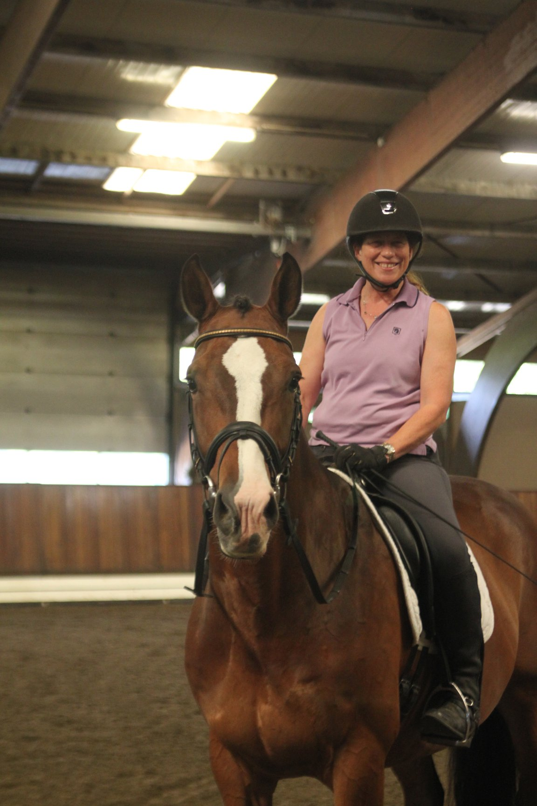
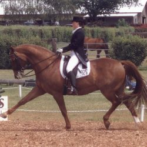

<section fxLayout="column" fxLayoutAlign="center">
  <mat-card class="about-card" ngClass.gt-xs="about-card-full" ngClass.xs="about-card-small" fxLayout="column">
    <div fxLayout.gt-sm="row" fxLayout.lt-md="column">
      <div class="card-column">
        <div class="heading-text">About</div>
        <p>San Sebastian Equestrian Center opened its doors on October 31, 1999. My barn manager, Salvador Holguin, was there on the
          very first day. <span><a href="https://hamishanderson.com/" target="_blank">Hamish Anderson</a></span> was building our home
          at the time so he was the general contractor for the equestrian facility as well.
        </p>
        <p>San Sebastian Equestrian is a small facility with premium care including daily turnout and feeding four times per day.
           There is an indoor and outdoor arena and access to trails. The tackroom is heated and has individual tacklockers and a washer and dryer.</p>
      </div>
      <div class="card-column">
        <div class="heading-text">Helpful links</div>
        <p><span><a href="https://www.uset.org" target="_blank">USET</a></span> - US equestrian federation</p>
        <p><span><a href="https://usdf.org" target="_blank">USDF</a></span> - US Dressage federation</p>
        <p><span><a href="https://www.usdfregion6.org" target="_blank">USDF Region 6</a></span> - Our regional USDF group</p>
        <p><span><a href="www.einw.org" target="_blank">Equestrian's Institute</a></span> - Local GMO for Dressage</p>
        <div fxLayout="row" fxLayoutAlign="start center" fxLayoutGap="12px">
          <div class="fb-like" data-href="https://www.facebook.com/sansebastianec" data-width="100" data-layout="standard"
            data-action="like" data-size="large" data-share="true">
              
          </div>
          <p>
            Click here to like us on Facebook!
          </p>
        </div>
      </div>
    </div>
    <div fxLayout.gt-sm="row" fxLayout.lt-md="column">
      <div class="card-column" fxLayout="row" fxLayoutAlign="center">
        
      </div>
      <div class="card-column" fxLayout="row" fxLayoutAlign="center">
        
      </div>
    </div>

  </mat-card>
</section>
